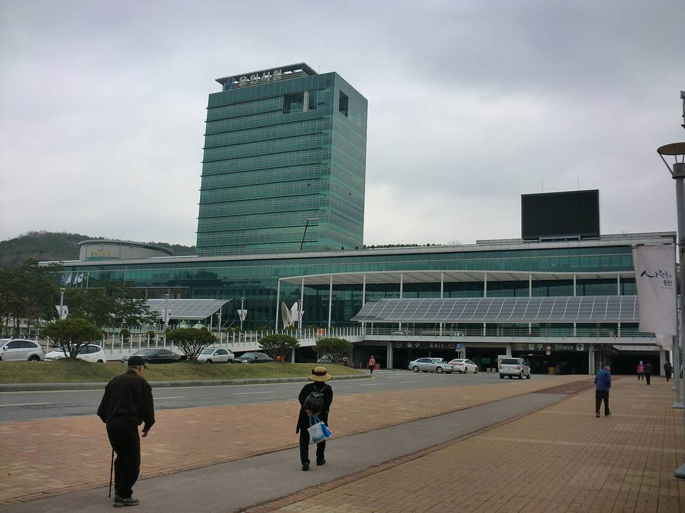

용인시정연구원, 반도체 도시의 재생에너지 수익을 시민과 나누는 5가지 방안 제시

공영주차장 51곳 중 17곳이 태양광 설치계획 제출…시민 출자 배당·주민 일자리·정책금융 연계 담아
용인시정연구원은 11월 3일 이슈리포트 'YRI Insight 119호'에서 '용인형 재생에너지 이익공유' 방안을 내놨다. 보고서에 따르면 용인에서는 국가산업단지 약 9GW와 일반산업단지 약 6GW를 합쳐 약 15GW 규모의 전력설비가 필요하다. 연구진은 송전망·발전시설의 영향을 받는 주민을 보상 대상에 머물게 하지 않고 투자·일자리·수익 공유의 주체로 세워야 한다고 밝혔다.
방안은 시민 출자 배당, 시공·유지관리 참여, 공공자산 발전사업, 정책금융·민간·시민 투자 연계, 인접 시·군 공동참여 검토 다섯 가지다. 공공자산 분야에서는 용인시가 검토한 공영주차장 51곳 가운데 17곳이 설치계획을 냈고, 15곳은 공간을 빌려주고 민간이 투자하는 방식이다. 이 방식이 계획용량 약 2,386kW의 94.9%(2,264.5kW)를 차지한다(연구진이 용인시 내부자료로 정리한 수치).
백암면 공공 유휴부지의 용인시민햇빛발전소(907kW)는 시민참여협동조합 출자와 발전수익 배당을 결합해 2025년부터 운영 중이다.
출처: 용인시정연구원 2026-11-03 YRI Insight 제119호 「함께 누리는 도시 용인, 재생에너지로 성장의 혜택을 잇다」(김민곤·정애린·임규민) 원문 보기
출처: 기호일보 2026-11-10 김형운 원문 보기
출처: 서울경제TV 2026-11-04 이상익 원문 보기
龍仁市政研究院、半導体都市の再エネ収益を市民と分かち合う5つの方策を提示
公営駐車場51か所のうち17か所が太陽光設置計画を提出…市民出資の配当・住民の雇用・政策金融の連携を盛り込む
龍仁市政研究院は11月3日、イシューリポート「YRI Insight 119号」で「龍仁型再エネ利益共有」の方策を示した。報告書によると、龍仁では国家産業団地約9GWと一般産業団地約6GWを合わせ、約15GW規模の電力設備が必要になる。研究チームは、送電網・発電施設の影響を受ける住民を補償の対象にとどめず、投資・雇用・収益共有の主体に据えるべきだと述べた。
方策は、市民出資の配当、施工・維持管理への参加、公共資産での発電事業、政策金融・民間・市民投資の連携、隣接市郡との共同参加の検討の5つだ。公共資産の分野では、龍仁市が検討した公営駐車場51か所のうち17か所が設置計画を出し、15か所は場所を貸して民間が投資する方式である。この方式が計画容量約2,386kWの94.9％（2,264.5kW）を占める（研究チームが龍仁市の内部資料で整理した数値）。
百岩面の公共遊休地にある龍仁市民太陽光発電所（907kW）は、市民参加協同組合の出資と発電収益の配当を組み合わせ、2025年から稼働している。
出典: 기호일보 2026-11-10 김형운 原文を読む
龙仁市政研究院提出5项方案，让半导体城市的可再生能源收益与市民共享
51个公营停车场中有17个提交光伏安装计划…方案涵盖市民出资分红、居民就业与政策性金融联动
龙仁市政研究院11月3日在专题报告《YRI Insight 第119期》中提出了“龙仁型可再生能源利益共享”方案。报告称，龙仁需要约15GW规模的电力设施，其中国家产业园区约9GW，一般产业园区约6GW。研究人员表示，不应让受输电网和发电设施影响的居民只停留在补偿对象的位置，而应使其成为投资、就业和收益共享的主体。
方案共五项：市民出资分红，参与施工和运维，公共资产发电项目，政策性金融、民间与市民投资联动，以及探讨与邻近市郡共同参与。在公共资产方面，龙仁市研究的51个公营停车场中有17个提交了安装计划，其中15个采用出借场地、由民间投资的方式。这一方式占计划容量约2,386kW的94.9%（2,264.5kW）（研究人员依据龙仁市内部资料整理的数字）。
位于白岩面公共闲置用地的龙仁市民阳光发电站（907kW）将市民参与型合作社出资与发电收益分红结合，自2025年起运行。
来源: 기호일보 2026-11-10 김형운 查看原文
Yongin Research Institute Sets Out Five Ways to Share Renewable Profits From a Chip City With Citizens
17 of 51 public car parks have submitted solar plans; proposals cover citizen-investment dividends, local jobs and policy finance
The Yongin Research Institute set out a 'Yongin-style renewable energy profit-sharing' proposal on November 3 in its issue report 'YRI Insight No. 119'. According to the report, Yongin needs about 15GW of power facilities: roughly 9GW for national industrial complexes and 6GW for general industrial complexes. The researchers said residents affected by transmission lines and power plants should not stay merely as recipients of compensation, but become participants in investment, jobs and profit sharing.
The five proposals are dividends from citizen investment, resident and local-firm roles in construction and maintenance, power projects on public assets, links between policy finance, private capital and citizen investment, and a review of joint participation with neighboring cities and counties. On public assets, 17 of the 51 public car parks Yongin reviewed submitted installation plans, and 15 of them follow a model in which the city leases space and private investors pay. That model accounts for 94.9% (2,264.5kW) of the planned capacity of about 2,386kW (figures the researchers compiled from internal city data).
The Yongin Citizen Sunlight Power Plant (907kW), on public idle land in Baegam-myeon, combines investment by a citizen cooperative with dividends from generation revenue, and has operated since 2025.
Source: 기호일보 2026-11-10 김형운 Read the original